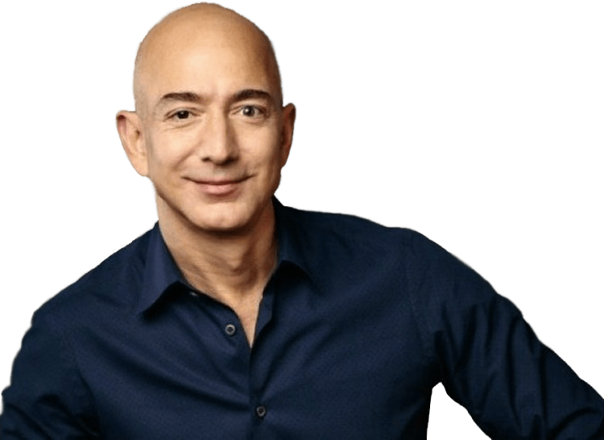

Jeff Bezos
The richest man in modern history

Founder, CEO, and president of the multi-national technology company Amazon.
Here are some important timeline in his life
- Jeff was born in January 12, 1964 in Mexico.
- His family moved to Houston, Texas in 1968
- In 1986, he graduated summa cum laude from Princeton University with a 4.2 GPA and a Bachelor of Science in Engineering (BSE) in electrical engineering and computer science
- He worked in different industry and capacity from 1986 to 1994
- He founded Amazon on July 5, 1994 but called cadabra then
- In 1998, Bezos diversified into the online sale of music and video, and by the end of the year he had expanded the company's products to include a variety of other consumer goods.
- In September 2000, Bezos founded Blue Origin, a human spaceflight startup company.
- In 2002, Bezos led Amazon to launch Amazon Web Services, which compiled data from weather channels and website traffic.
- In 2003, Amazon rebounded from financial instability and turned a profit of $400 million.
- In November 2007, Bezos launched the Amazon Kindle.
- In 2013, Bezos secured a $600 million contract with the Central Intelligence Agency (CIA) on behalf of Amazon Web Services.
- In October of that year, Amazon was recognized as the largest online shopping retailer in the world.
- On July 27, 2017, Bezos momentarily became the world's wealthiest person over Microsoft co-founder Bill Gates when his estimated net worth increased to just over $90 billion.